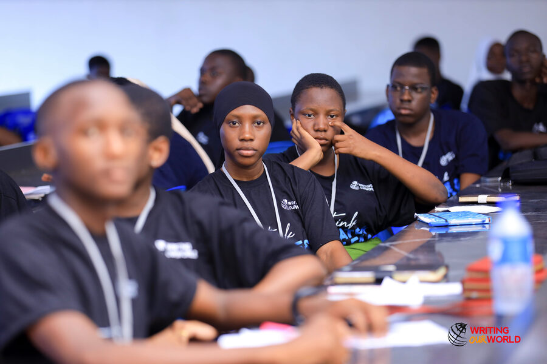
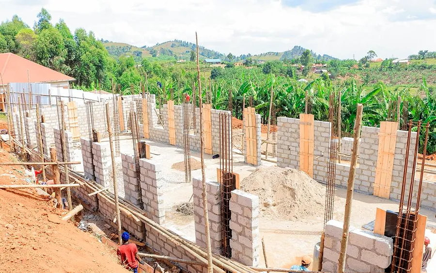

Experienced Teachers
A caring team of qualified, experienced educators who know each learner by name and go the extra mile for their success.
Welcome to Kashenyi
Since our founding, Kashenyi Secondary School has stood as a beacon of quality education in Rukungiri District. We blend a rigorous academic programme with strong moral formation, offering both O-Level and A-Level education in a serene, secure and inspiring environment.
Why Choose Kashenyi
From the classroom to the playing field, every part of school life at Kashenyi is designed to help your child thrive.
A caring team of qualified, experienced educators who know each learner by name and go the extra mile for their success.
Fully equipped physics, chemistry and biology laboratories plus an ICT centre, giving learners hands-on practical experience.
Quality education at fees that respect the pocket of the Ugandan parent, with flexible payment arrangements and bursaries.
Consistently impressive UCE and UACE performance, with a growing number of learners earning government and private university places.
A secure, well-supervised boarding community with healthy meals, counselling and round-the-clock care for day and boarding learners.
Football, athletics, music, drama, debate and clubs — because talent grows best when it is celebrated.
Core Values
Four pillars guide everything we do at Kashenyi Secondary School.
We act honestly and uphold truth in all we do.
Self-control and respect form the foundation of success.
We pursue the highest standards in academics and character.
We serve our community and give back with humility.
0
Students
0
Teaching Staff
0
UNEB Pass Rate
0
Years of Excellence
School Life

Latest News
Students in the national debate team take part in activities that develop research, argumentation and public-speaking skills.
Read about the national debate teamOur candidates recorded a 94% pass rate, with a significant number qualifying for A-Level admission to top schools and our own A-Level stream.
Read the 2025 UCE results update
Work has begun on a modern girls' dormitory that will expand our boarding capacity and improve living spaces for our learners. The community is excited to watch this project take shape.
Read the girls’ dormitory updateAdmissions Open
Admissions for the next academic year are open for both O-Level and A-Level. Spaces are limited — secure your place today.